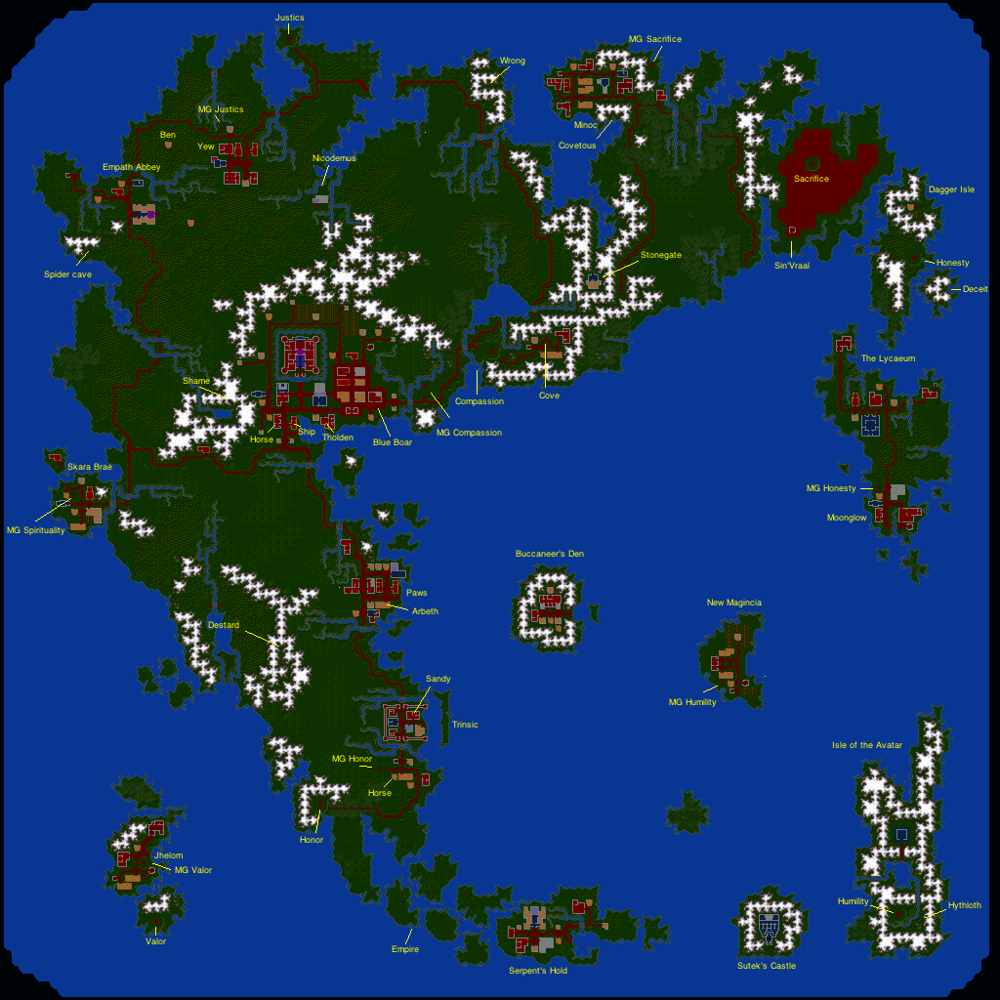

Annotated map of Ultima 6 (minor spoilers)
(click to enlarge)
Levels 3: 200 4: 400 5: 800 6: 1600 7: 3200 8: 6400
Shrines:
Thomas, Dupre, Segallion: Valor
Shamino, Jaana: Compassion
Iolo: Honesty
(Strength, Dexterity, Intelligence)
| MG of honesty, Moonglow | Shrine of honesty (Ahm, 0, 0, 3) |
MG of compassion, Britannia | Shrine of compassion (Mu, 0, 3, 0) |
MG of valor, Jhelom |
| Shrine of humility (Lum, 0, 0, 0) |
Shrine of control | Lord British's castle | Shrine of passion | Shrine of valor (Ra, 3, 0, 0) |
| MG of humility, New Magincia | _ | You are here | _ | MG of justice, Yew |
| Shrine of spirituality (Om, 1, 1, 1) |
Gargoyle altar | Shrine of diligence | Temple of Codex | Shrine of justice (Beh, 1, 0, 1) |
| MG of spirituality, Skara Brae | Shrine of honor (Summ, 0, 1, 1) |
MG of honor, Trinsic | Shrine of sacrifice, desert (Cah, 1, 1, 0) |
MG of sacrifice, Minoc |
Mantras: X Compassion (heart, Cove): "Mu", Rune: Ariana, bard, southwest of LB X Honor (cup, Trinsic): "Summ", Rune: center of town, ask mayor (Whitsaber) first X Spirituality (ankh, Skara Brae): "Om", book in inn X Humility (staff, New Magincia): "Lum", Conor Starfalcon, fisherman south of New Magincia, humblest X Valor: (Jhelom) "Ra", from Van Kellian, musician, need cheese for Sherry @@ X Justice: (balance, Yew) "Beh" (mayor of Yew) X Honesty (Moonglow): "Ahm" (Penumbra), need 60g to buy "Unlock magic" from Horance X Sacrifice (Minoc) "Cah", from Tara, healer in Minoc, Selganor in exchange of panpipes+music Shrine of Compassion: 0N 25E Shrine of Honesty: 12N 78E Ant hole: 21N 66E Pride: mul To level: compassion, spirituality, valor or honesty ===================================== Britannia ** pickpocket the belt from phoenix Lord British troubled gargoyles orb Nystul Take the book to Mariah at the Lycaeum @@ Sherry british sherry stories hubert Fighter Team recovering from trying to get the shrine of compassion back in Cove @@! Maldric boar forest roast majesty cook recipe british pepper Room @@! There is something for you under a plant in Serpent's Hold Jester clue quest hint chest nystul <-- search the chest in Nystul's room@@ jest world fun teach speeh that done House SW of LB census gargoyle mayor =================== Sewers Daros sewers joke friends Phoenix thechu <-- used to be captain of the Black Thechu thieves guild stars edge <-- we were at port one day when the anchor chain snapped and the Thechu drifted off the edge of the world budo <-- talk to Budo if you want to join the guild (Buccaneer's Den) @@ belt retire wits =================== Town south of LB Dove South of loch lake and north of the bay, the beautiful shrine of compassion doth lay. My Artagel set out to chan there one day. But still he has not returned. Peasant disguise commoners chuckles blackthorn dungeons Tholden british werecat mantra <-- the rune and mantra of Compassion are in the keeping of the bards at the conservatory. The towns for runes are Moonglow, Jhelom, Yew, Minoc, Trinsic, SkaraBrae and New Magincia conservatory codex Kytyn birds museum oddities falconer exhibits library <-- visit Lycaeum ** british monolith energy machine bones fountain dragon gertan Ariana bard play fun mantra <-- can't remember now and kenneth taught it to me last week. wait, I remember, mo. Or mu. kenneth rune <-- go ask my parents a the blue boar tavern if you can borrow it @@ Kenneth song mantra <-- mu wife concerts spiders imagination Lady Nan music lute spiders gloves Wilbur buy <-- horse Arty, mute, SW of LB ship (300g) Tiberius (healer) heal cure resurrect Peyton, wayfarer's inn inn Terri mint pence gold kytyn avatar exchange museum Daver McCord bell numbers time business avatar runes justice bristish cities Minor Trinsic Jhelom Yew Skara Brae Britain Moonglow New Magincia mantra <-- each of the lords knows a mantra shrines time Fyodor loom buy books oz balloonist silk charlotte <-- lives in new Magincia, can make silk, maybe balloon? @@ Efram (lower left house) torches oil gems backpacks bags shovels powder Gwenneth (middle lower left) iolo gargoyle bolts <-- go see Fletcher over to the north weapon arms: bow: 30, crossbow: 40, sling:10 , magic bow: 300 Lynn arrows bolts Cullen baker buy sell (will buy flour) ========================= Trinsic (Honor) Rune of honor Horseshoe Magic armor Immanuel else show horses buy Harold horsehoes Mandrake root louder taverns virgin keg bottle folly lair <-- Mention Mandrake to Dr Cat @@ den jhelom moonglow derydlus penumbra powers prophecy Sandston Angus (Sandy) whitsaber sauce pastry favor "A golden orb on a crystal sea in a box sans hinges, lid or key." (egg) egg dragon <-- lair in dungeon Destard to the NW, get an egg from him ** map == after giving the egg: fourth pirates Lawrence grapes ale mead wine rations Brandon journeyman supply weapons buy arms armor Iron helm: 15, Kite shield: 25, Magic armor: 350, Magic helm: 200, Plate mail: 100 Mace: 35, Main gauche: 20, Sworc: 40, 2H axe: 50, 2H hammer: 55, 2H sword: 75 Whitsaber (mayor) rune mantra ========================= Skara Brae (Spirit) Quenton had the rune. Mondain's henchmen kill his wife Elisabeth Ask Gideon about the people in the inn Gideon: mondain elisabeth travelers killed rent beliefs renthar <-- mondain people looking for it something girl boarded coast <-- south of here Trenton: position spiritual gargoyle scream inn travelers strange gideon nightmares haunting mantra <-- surely you can read books read Dezana: quenton <-- talk about his ghost killed manipulating <-- the environment spirit soul Marney: <-- rune of spirituality in basket dock poem locket basket sea killed yorl father inn gideon Yorl: strong father raider quenton they gideon stivius <-- saw Quenton murdered gargoyles wife serpents master eyesore light british ann catch storm glass <-- fish only comes to the surface when the sea is like glass mondain skiff scuttled spear rounding alchemist <-- ivers rounding is where the alchemist lives neck Horance: island north of Skara Brae, sells reagents, spells book quenton traitor love dove reagents: black pearl, blood moss, mandrake root, nightshade spider silk, sulfurous ash spells: 1) harm 2) magic arrow, poison, trap, unlock magic 3) curse, fireball 4) disable 5) explosion, lightning, paralyze 6) flame wind, hail storm, poison wind 7) chain bolt, energy wind, kill, mass curse, wing strike Stivius: ghost tale murdered gideon noise dark evil inn wife whispering sized gargoyles twelve languages "like the one the alchemist speaks" kneeling alchemist "go ask old horance, he can tell ya if you can understand him horance <-- ask him about languages or the alchemist ========================= North of Skara Brae: Faren: drunk sister stephanie blind gargoyle Glen D'arc: Trinsic sunny bodies gravedigger solvol ========================= Yew (justice) @@ Ask Zoltan about the tablet Arbeth wool thread silk <-- needs 40 pieces of spidersilk Mortude (rope maker) rope Timothy lodging Dr Cat mandrake <-- are you friends with this deadbeat? He owes me more trinks thn I can count Ubermon Kalbmilch kalbmilch milk cheese Patrick bard stories songs Miss Trihune (Marissa) miss fashion Hendle meat Jaana: gargoyles join Andrea: men gargoyles Lenora courts wood <-- head west from here to meet ben the logger @@ justice rune thief permission* Pridgarm: jail prisoner solitary cells grave key Boskin (thief) out kids truth rune go <-- rune justice thidden under a potted plant in the Slaughtered Lamb inn Karina: father dance gorgios king people gypsy embarassed sister <-- penumbra Sinjen warrior stocks perspectiev life Blaine juggler join Le'nard tailor pants tunics dresses thread Taynith: true fortunes Zoltan king gypsies castles road advice <-- powder kegs to open doors sell spirits wind wander <-- sell reagents, also buy stuff (walks between Yew - Trinsic) tablet <-- ambushed by captain Hawkins, pirates got away with bigger half, Hawkins took his earring, sold it to Mariah gorgio john <-- claims he's been living with gargoyles hawkins lycaeum mariah Utomo: ombogo don island fan <-- lady on island make magic fans, they make big wind, blow ships all around home many evil ship kill TODO: door magically locked in the upper row and lower right, forge Armor: brass helm (20), leather armor (35), leather helm (7), ring mail (40), swamp boot (10) Arms: club (10), dagger (10), spear (12), throwing axe (12), 2h axe (45) Ben (logger west of Yew) wars friends king wood <-- buy ================== Gypsies Wanda wicked private table <-- Andreas has a silver tablet @@ sweeter Arturos translate cards title fortune fortunes uncle arthur map <-- sells it for 100g Andreas gypsies tablet <-- "I overheard from a bard in a tavern say that it was somewhere on the Isle of the Avatar. Perhaps Arturos could tell you precisely" arturos locket sword love wanda ========================= Empath Abbey: Steph: heal cure resurrect Sionnach drummer singer battle book ships empire* <-- ship name, as others dutchman <-- ship name virtuous* <-- ship name, resting on Loch's Lake Eckhart bees garden vines seedless enchanter <-- east of here, between two rivers, north of Britain ** grapevines wine faren Sylaina Moorehead (NW of Empath Abbey, on the pier) widow seamstress seashore nathaniel gypsy <-- gypsies stole her locket, travel between Britain and Trinsic **, anchor near her pirate stole locket ================= Cove (compassion) @@ ask Gertan (from Geoffrey) @@ steal cheese on the table from the first house north ** ask gertan about freitag Rudyom (can teach pickpocket) books reagents: blood moss, garlic, ginseng, nightshade, spider silk, sulfurous ash spells: 1) create food: 20, douse, heal: 20, ignite 3) mass awaken: 60, 4) great heal: 80, 5) pickpocket: 100, seance: 100 Sasha rest tend heal cure resurrect time reagents grieve compassion sleep Ahrmaand <-- lord cove shrine mantra <-- ask Lord British's Chancellor, Tholden and rune too @@ sick leader force <-- use the rune of compassion whilst chanting the mantra of compassion gertan <-- a party of adventurers arrived here after their attempt to defeat the gargoyles at the S of compassion, their leader told me of their violet energy field leader <-- in bed at Sasha's, recuperating Gertan @@ need to speak with him in Cove from Geoffrey in LB battle slay magic field ================ New Magincia (humility) @@ ask Charlotte about silk Charlotte Weaver <-- will buy wool $$ weaver wool cloth Conor Starfalcon iolo years fish way mantra <-- 'lum' shrine "far to the southeast" boat Aurendir modest meditate sheep wool castle shrine shorn thread buy cloth robes circle earth Antonio (mayor) new hobby humility magic humble Dunbar fish ale mead wine mutton ============== Jhelom (valor) Peer ships 200G skiffs sailor Heftimus McPry den Hawkins hand Arvin rolls ale mead wine rations Martin dutch inn Zellivan (lord) valorous arms <-- ask nomaan about the rune @@ battle no man <-- winner of the contest to hold the rune rune mantra <-- hear it for thyself at the Sword and Keg pub tales Nomaan buying selling rune tale rat hole <-- west wall of the pub, rat carrying the rune Lyssandra andy keg fighter rat idea <-- use a mouse to get the rat mantra "Culham has oft sung of it, with Jerris and Starhelm" jerris starhelm "real name is Stelnar" fighting Van Kellian song mantra 'mul' Jerris zellivan hole Starhelm monster wisps gargoyles sin' vraal statue daemon british dry <-- went to live in the dry land desert <-- there's a shrine there, honesty statue ugly ============== Moonglow (honesty) ** Need to come back once I have Unlock Magic (2nd circle) ** Move harpsichord in Blue Bottle Tavern Lord Aganar moonglow honesty fishing bottle shrine rune <-- had it once but I entrusted it to Beyvin's care, as he's the most honest, lives with Penumbra @@ mantra <-- Penumbra might be able to help you with that @@ drinking beyvin penumbra Manrel tattooed <-- codex woodworker alchemy mead bottle folly libations key flowers daffodils Rob Frasier mead wine bread brie frasier folly ale =========== The Lycaeum @@ Mariah about the book Ephemerides moons tidal glasswares <-- lenses and the likes instruments orrery spring neap sextants <-- 30g quadrature tide lenses <-- What sort of lens do you want? Dargoth cure heal Xiao avatar wizards spells 1: detect magic dispel magic light 2: infravision reappear telekinesis vanish 3: dispel field (75), great light, peer 4: animate, fire field, locate, mass dispel, poison field, sleep field, wind change 5: energy field, invisibility, reveal, x-ray 6: clone, negate magic, replicate 7: fear, gate travel, wizard eye reagents balance virtues wisps shrines powerful thariand <-- can tell you more about the shrines, librarian at Lycaeum @@ lycaeum Thariand star magic books 718.5 B34 z5 "The lost art of ballooning" 998.99 ZWX "The lost book of mantras" nicodemus <-- lives southeast of Yew @@ dewey T17 0035 r16RL.5 v43 rune <-- can find more information in Priliwig's Universial Compendium of Knowledge (a001.3 bfb) Nicodemus reagents spells: 1) detect trap 2) sleep, unlock magic, untrap 3) magic lock, mass sleep, protection, repel undead 4) conjure 5) insect swarm: 100, 6) charm, confuse, mass protect, web 7) enchant, mass invisibility staves experimenting interested Dargoth cure heal Penumbra ** Locked door, need to return when I can pick locks ** penumbra fortune future rune <-- was buried with Beyvin, rest his shade beyvin <-- buried in the catacombs under Moonglow @@ honest daffodils mantra <-- 'ahm' Mariah council library sleep sense book tablet <-- ask the gypsies, bring both pieces back to her "This false prophet follows not the principles of Control, Passion and Diligence. Seek Sin'Vraal Derydlus folly drink =============== Minoc (sacrifice) @@ Your next hint is under a beehive in Minoc Troy clocks moons chess ticking civilization ephemerides <-- he lives in the Lycaeum gearwork mind tocks Aaron sawmill boards Lady Isabella (mayor) known sacrifice craftsmen woodroffe rune <-- gave it to Selganor, the artisan's guildmaster flue selganor artisan mantra <-- the good healer Tara should be able to tell you the mantra, N side of town selganor <-- fine musician, lives across the road from me musician guild busy Julia guild <-- ask Selganor to become a member adventure selganor join panpipes <-- need to bring a yew board, freshly cut board <-- buy freshly cut wood in Yew, take it to a sawmill, have em cut into a board cut Selganor history business guildmaster crystal guild <-- to join, make a set of panpipes (ask Julia) and commit 'Stones' to memory, ask Gwenno @@ panpipes julia stones gwenno lute isabella rune <-- only members of the guild are allowed to handle it Gwenno stones <-- 678987 8767653 apprentice iolo songs notation <-- a number for every note guild join boar traditions selganor James apprentice buy sell arms: dagger: 10, mace: 35, main gauche: 20, morning star:40, sword: 35 armor: chain coif: 15, chain mail: 50, ring mail: 35, scale mail: 70, winged helm: 20 Julia guild adventure join selganor Michelle (cheese person, far left house) father baskets <-- can weave baskets for up to 8 people (balloon?) plans <-- without accurate plans it takes far too much time to craft a basket Trebor ships: 250g skiffs: 20g Doris hey you father lycaeum xiao <-- only she can teach the spells of the gratest power power Tara (healer) unfit healing curing resurrected mantra <-- cah ========== West of Dagger Isle Sin'Vraal free people fly gargoyle intelligence <-- yet as some in Minoc can tell you, flying can be achieved by anyone temple <-- even the temple can only be reached by air, even though it's underworld pirate <-- got dragged off by ants ants book <-- Go through Hythloth to go to the underworld ========= North of the Moonglow shrine, hermit Bonn shoes sea dancing waltz map house <-- map hidden there, maybe basement die basement comfort world bumberchutes secret us we others late ============== Serpent's Hold Morchella sailor pirate british john map shield Seggallion ashtalarea <-- knigh of unfamiliar tyme pildar blue entered community queer Koranada, son of Kulebra, Order of the silver serpent lighthouse order courage <-- go and speak to de Hugh ** process gherick <-- ask about making a shield @@ Amanda (miss Mandy) ale mead wine rations waybread Sentri returned gargoyles join Gherick shield? hideous buy arms? armor? Sir Caradon of Trinsic adventure shrine dead vengeance beasts Shubin (cook in inn, NE part of Serpent's Hold) roll cook adventurer egg <-- ** bring him back a dragon's egg M'sieu Loubet touche tip ringing fencing instructor Tessa courage earthquake simon Simon tessa ================== Buccaneer's Den Budo orrery sell: lockpicks, torches, oil, gems, backpacks, bags, shovels, powder kegs den guild <-- need to have your own belt Fentrissa fentrissa sea jealous ships: 350g skiffs Captain Leodon captain golden hind sea repairs join Captain Elad captain <-- of the Theodosia Marie sank bordermarch shaking earthquakes whirlpool british rescued mantra Leonna <-- of the Golden Hind captain leodon hind repaired join Captain Fox <-- of the Silken Stag stag drink Petroph inn Homer Empire <-- It was wrecked on the cape southwest of here, not too far from Serpent's Hold ** Hawkins <-- was killed by his own men tablet <-- ask Budo about becoming part of the guild treasure <-- buried in a small cave cave <-- after Hawkins passed away, we tore his treasure map into nine pieces: X Ol' Hawknose set out for the Dry Land, to kill the daemon that is said to live there X Sandy the ship's cook went to Trinsic with the first mate, says the real name of mayor, Lord Whitsaber is Alastor Gordon and he was the 1st mate of Captain Hawkins, ask "map", "gordon" X Old Ybarra said he was headed for the dungeon Shame, looking for more treasure X I think one of the men died in the shipwreck: Empire 71S 15E X Then there was one more, can't remember his name, settled in Jhelom, has a hook in place of hand: Heftimus, map in dungeon Wrong, 3rd level. X There's one in Serpent's Hold, can't recall her name but she has a piece of the map with her: Morchella, want a shield of the order of the serpent X Hermit in Dagger Isle X Pirate in Empath Abbey, Nathaniel Moorehead When you reach the island marked with the X, find the three stones and stand in the center, then 3 paces south, 9 west, 12 south, puts you next to an old dead tree, dig in dirt south of you. Pirate cave tombstone: Here lies captain Hawkings. He died a hero. Death and he deserved it. Yodeling Johann yodeling songs pira sailors move ballooning <-- read about it in a book at the Lycaeum ** lycaeum <-- ask the librarian there for help ** Shawn ham ale mead wine rations Enrik enrik hammer left buy arms: club: 10g, dagger: 10g, main gauche: 25g, oil flask: 4g, throwing axe: 20g armor: cloth armor: 20g, leather armor: 40g, leather helm: 10g sell ========== Shame Ybarra belt give Crystal ball: Lycaeum, up NW Locked area in Penumbra's house, need 1 pick lock and 2 unlock magic Sextant: 73s 26e: magically locked chest 31s 31e: Budo @@ (Buccaneer's Den) 5s 73e: crates and potions Lost mantras: kim rum bem dim sum kyo lox nid pey un or us biff pow ohm bang lis zowie cow frem ort spam mho yum tea meow ========== Hythloth Captain John cataclysms talk gargoyles beh lem <-- meet every day at noon, where Hythloth emerges in the Gargoyle lands society beliefs <-- Control, Passion and Diligence which lead to the virtues of Direction, Feeling and Persistence. Combined, they lead to Balance, Achievement and Precision. Taken all together, they point to Order and the sum of all the principles is Singularity. language studying ========== Gargoyle World Beh Lem speak captain prophet valkadesh <-- 40S 65E. Turn north at the hall of knowledge, walk east along the mountains until narrow pass, find house through the pass guide mountains hall house lava directions Valkadesh Codex prophecy sacrifice choice Naxatilor <-- NE of the hall of knowledge @@ answer partial <-- "Surrender to the Inquisitor so you won't be a threat to my people" inquisitor <-- Go ot Draxinusom, NW of hall of knowledge @@ free surrender freely Draxinusom surrender Naxatilor fated choice codex <-- Captain Bolesh just returned from the Codex, try the healer's house to the north -cube -catacombs Healer healing curing -cube -catacombs Bolesh leader codex force quests <-- can only receive a sacred quest at the Temple of Singularity temple <-- to the north, need to fly fly (no name, goodscrafter) late goods -cube -catacombs Foodmaker food meat -cube -catacombs Weaponsmith apprentice disaster goodscrafter dishonor master catacombs <-- find shrines to Control, Passion and Diligence singularity fly -cube Snakecharmer horn snake battle Caretaker duties hall chambers underworld cube <-- stolen by human thieves, mentioned Stonegate, said they would sail through Lost Hope Bay lens <-- in the Vortex chamber stonegate vortex -catacombs Lor-wis-lem, lens crafter Naxatilor apprentices time (give broken lens, will make new one) -cube -catacombs Krill Us-arb-vas-lem, Krill the Leader of farmers leader wingless freedom leadership harvests Nash guidance Books With the help of the Lensmaker, I crafted the Vortex Lens by which I could see the Codex where it originally rested. I created the Vortex Cube to focus the power of the Moonstones and draw the Vortex down to the world. Then I used the lens to form an image of the Codex upon the cube. The Vortex touched our plane, the image became solid and the Codex was brought down to be used properly by our race. =========== Stonegate Cyclop tiny Myles papa adopted cellars stuff =========== Sutek's Castle Sutek mad balloon catacombs pushme pullyu Two-headed horse (Pushme Pullyu) puzzle <-- If my partner said you should go west, then he would be a lying pest. If my partner said you should go east, then he'd be a lying beast. If my partner said "go east" then he'd have said that which is true. If my partner said to you "go west" then his advice would be the best. west east riddle pushme pullyu lies lie true Balloon - wicker balloon basket X big iron cauldron - huge bag sewn out of silm X rope - anchor ========= Temple of Singularity "everyone" catacombs control <-- near the coast to the west of here passion <-- east diligence <-- near the coast south principle ======== Shrine of Control Wall1 Wall2 1 2 4 5 6 7 8 9 10 11 12 13 14 Lever Door 2, 10 => 2 1 => 3 4 => 4 Wall2 => 5 (field) Mondain task control Say "un" ========= Shrine of Passion "or" ========== Shrine of Diligence s, s, w, secret door "us" ====== Codex unorus <-- unusor orunus orusun usunor usorun
{kind=link}